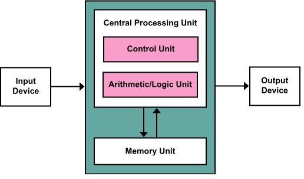

Il computer
Un sistema di elaborazione è un sistema artificiale, in
grado di elaborare (che significa trasfornare, processare).
Un elaboratore è un sistema aperto: riceve "qualcosa" dal
mondo esterno, lo trasforma e restituisce all'esterno il
risultato della trasformazione. Ciò che entra nel sistema
viene chiamato «input». Ciò che esce dal sistema viene
chiamato «output».
L'operazione di trasformazione dell'input in output viene chiamata elaborazione
Per b architettura di un sistema si intende come è fatto e come funziona il sistema,
quali sono le componenti che lo costituiscono e come interagiscono tra loro.
Il computer, o elaboratore,è un sistema đi elaborazione, una macchina
(dispositi- vo privo di intelligenza autonoma) costituita da un insieme di elementi di diversa
natura (elettrici, elettronici, meccanici, ottici), in grado di acquisire dall'esterno dati e
programmi, e produrre in uscita i risultati dell'elaborazione Se vogliamo che un computer
risolva un
problema dobbiamo fornirgli i dati su cui lavorare e una sequenza ordinata di istruzioni
(programma)
che trasforma i dati ricevuti e fornisce i risultati, le informazioni.
